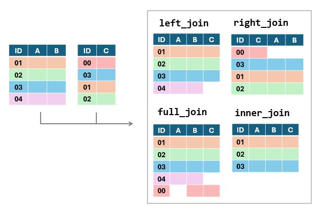

מבוא
בשיעור זה נלמד להשתמש במגוון פונקציות המאוגדות תחת החבילה dplyr.
פונקציות אלו מאוד נפוצות בשימוש בR כיוון שהן מאפשרות לעבד קבצי נתונים באופן פשוט ומסודר. בחלק מהמקרים הפונקציות שנפגוש יאפשרו לנו לעשות דברים שכבר למדנו איך לעשות בשיעורים הקודמים (משל - חיתוך של שורות או עמודות מתוך טבלה) אך הן יעשו זאת באופן שיאפשר לנו לשמור את הקוד שלנו קריא ותמציתי. במקרים אחרים נפגוש פונקציות שמאפשרות לנו לעשות עיבודים חדשים שעוד לא פגשנו.
השיעור ארוך יותר מהשיעורים הקודמים, אך הוא נוגע בתחום מרכזי מאוד בשימוש בתוכנה ולכן מומלץ להקדיש לו זמן וקשב, שכן אלו פונקציות שנמצאות בשימוש תדיר בעיבוד נתונים.
פקד ההעברה
לפני שנגיע לשימוש בפונקציות עצמן, נרצה להתעכב על פקד חדש הנכלל בחבילה
זו - פקד ההעברה (או באנגלית - piping). פקד זה מיוצג על ידי הסימון
%>% ואפשר לחשוב עליו כעל צינור שמעביר את האובייקט שלפניו
לפונקציה שמופיעה אחריו.
למשל, במקום לכתוב mean(vector1) נוכל לכתוב
vector1 %>% mean(). הפקד יקח את הוקטור
vector1 ויעביר אותו אל תוך הפונצקציה mean.
לפניכם מספר דוגמאות נוספות. כל צמד שורות מבצע את אותה הפעולה בדיוק.
# וקטור הציונים
scores = c(80.2,75.5,60,75.5,75.5,75.5,84,80.2,94)
# סינון כפילויות
unique_scores = unique(scores)
unique_scores = scores %>% unique()
print(unique_scores)## [1] 80.2 75.5 60.0 84.0 94.0# עיגול הציונים
rounded_scores = round(scores, digits = 0)
rounded_scores = scores %>% round(digits = 0)
print(rounded_scores)## [1] 80 76 60 76 76 76 84 80 94למה זה טוב?
כל עוד אנחנו משתמשים בפונקציה אחת, אין לשימוש בפקד זה יתרון משמעותי. היתרון העיקרי מגיע כשאנחנו רוצים להשתמש בכמה פונקציות ברצף. במקרים כאלו, אנחנו יכולים להכניס את התוצר של כל פונקציה בתוך הפונקיה הבאה, אבל כתיב כזה ייצר קוד מאוד מסורבל. הפקד מאפשר לנו לכתוב את אותו הקוד באופן הרבה יותר מסודר ונח לקריאה. נוכל גם לרווח את הקוד לשורות שונות ולהוסיף הערות שיעזרו לנו לזכור מה עושה כל שלב בניתוח.
למשל - נוכל להשתמש בפקד ההעברה כדי לחשב את מספר הערכים הייחודיים בוקטור הציונים שלנו:
# וקטור הציונים
scores = c(80.2,75.5,60,75.5,75.5,75.5,84,80.2,94)
## ללא פקד העברה
n_unique_scores = length(unique(scores))
## עם פקד העברה
n_unique_scores = scores %>%
unique() %>% # מסננים כפילויות
length() # ואז מחשבים את אורך הוקטור הקוד שנכתב באמצעות הפקד מסודר יותר ונח יותר לקריאה.
שימו לב - כשאנחנו משתמשים בפקדי העברה, תוצרי הביניים של הפונקציות לא נשמרים. התוצר היחיד שישמר הוא התוצר של הפונקצייה האחרונה בשרשרת, והוא יישמר תחת שם האובייקט שאליו ביצענו את ההשמה.
כדוגמה נוספת, נדפיס את ממוצע שורשי הציונים.
# וקטור הציונים
scores = c(80.2,75.5,60,75.5,75.5,75.5,84,80.2,94)
# ללא פקד ההעברה
print(round(mean(sqrt(scores)),digits = 1))## [1] 8.8# עם פקד ההעברה
scores %>%
sqrt()%>% # חישוב שורשי הציונים
mean()%>% # חישוב הערך הממוצע מתוך שורשי הציונים
round(digits = 1) %>% # עיגול הממוצע שחושב לספרה אחת אחרי הנקודה העשרונית
print() # הדפסה## [1] 8.8בדוגמה הזו היתרון של כתיבה באמצעות פקדי העברה נהיה קצת יותר ברור. במהלך השיעור נראה דוגמאות נוספות ליתרון של שימוש בפקד זה.
תרגיל כתבו מחדש את הקוד הבא באמצעות פקד העברה:
numbers_as_text = c("12","14","15","7","34","22","17")
mean_number = round(mean(as.numeric(numbers_as_text)),2)
print(mean_number)## [1] 17.29numbers_as_text = c("12","14","15","7","34","22","17")
mean_number = _________________________________
print(mean_number)numbers_as_text = c("12","14","15","7","34","22","17")
mean_number = numbers_as_text %>%
as.numeric() %>%
mean() %>%
round(2)
print(mean_number)בחירת עמודות
הפונקציות הראשונות בהן נשתמש מבצעות פעולות שכבר התנסנו בהם. למשל -
הפונקציה select מאפשרת לנו לייצר טבלה חדשה מתוך העמודות של
טבלה קיימת. אנחנו יכולים לציין את שמות העמודות שאנחנו רוצים
להשאיר, או את אלו שאנחנו רוצים לסלק (בליוויסימן
מינוס).
כך או כך, הפונקציה מייצרת טבלה חדשה מתוך החיתוך שעשינו. היא לא עורכת את הטבלה המקורית שהכנסנו לפונקציה.
במידה ואנחנו רוצים לערוך את אותה הטבלה אנחנו יכולים לשמור את הטבלה המעודכנת תחת שמה של הטבלה המקורית ובכך לדרוס את הגרסה הישנה ולהחליף אותה במעודכנת.
הנה כמה דוגמאות:
# נשתמש בטבלה שייבאנו בשיעור הקודם, המכילה את נתוני שאלון
# need for cognition
# בחירת העמודות המציינות את מספר ההרצה, את מין הנבדק ואת הגיל שלו
demographic_data = need_for_cognition %>%
select(session_id,age,gender)
head(demographic_data)# השמטת העמודה הראשונה ועמודות בדיקת העירנות
no_attention_check = need_for_cognition %>%
select(-1,-attention_check)
head(no_attention_check)# עדכון הטבלה שיצרנו כך שלא תכיל את נתוני הגיל
need_for_cognition = need_for_cognition %>%
select(-age) בחירת עמודות המכילות תווים מסוימים
יישום שימושי נוסף של פונקציה זו הוא שהיא מאפשרת לבחור עמודות על סמך
התוכן של שמות העמודות. למשל - באמצעות הפונקציה contains
נוכל לבחור את כל העמודות המכילות רצף תווים מסוים. אפשרות זו שימושית
כשאנחנו רוצים לבחור קבוצה של עמודות ששמרנו בשם דומה - למשל תשובות לשאלות
שונות באותו השאלון.
בדוגמה למטה אנחנו חותכים מתוך הטבלה הכללית שלנו תת-טבלה המכילה רק את התשובות לשאלון ואת המספר המזהה של התגובה של כל נבדק
questions_and_sesion_id = need_for_cognition %>%
select(session_id,contains("nfc"))
head(questions_and_sesion_id)שליפת עמודה כוקטור
שימו לב - כשנבצע בחירת עמודות באמצעות select)( נקבל חזרה טבלה - גם אם בחרנו רק עמודה אחת. במידה ונרצה לבצע חיתוך של עמודה בודדת כוקטור ולא כטבלה נוכל להיעזר בפקד ה$, או להשתמש בפקודה pull() המבצעת פעולה דומה. בדוגמה הבאה אנו נעזרים בפקודה זו על מנת לבחון מה הם הערכים השונים המוכלים בעמודה gender.
need_for_cognition %>% pull(gender) %>% # שליפת העמודה המכילה את נתוני המגדר
unique() %>% # פונקציה המשיבה וקטור שמונה את הערכים השונים הקיימים בוקטור
print() # הדפסה## [1] "female" "male" NAניתן לראות שהעמודה מכילה ערכים המעידים על נבדקים זכרים, נקבות וערכים חסרים כלשהם
סינון שורות
עכשיו שבררנו את העמודות הנחוצות לנו - נוכל לעבור לעיסוק המשלים: סינון שורות.
גם כאן נוכל לשמור או להשמיט שורות לפי המספר הסידורי שלהן, באמצעות
הפקודה slice , אך ברוב המקרים סינון השורות שנרצה לבצע יהיה
תלוי בתוכן של השורות עצמן ולא במספר הסידורי שלהן.
למשל - ייתכן ונרצה לסנן מתוך קובץ הנתונים שלנו את כל הנבדקים שלא סיימו את הניסוי, הנבדקים שנמצאים מחוץ לטווח גילאים מסויים או שחסרים להם נתונים חשובים.
בשביל פעולות כאלו, שהינן תנאי הכרחי כמעט בכל ניתוח שנערוך, ניעזר
בפונקציה filter.
פונקצייה זו מקבלת את הטבלה עליה נרצה לבצע את הסינון (באופן ישיר או באמצעות פקד ההעברה), ותנאי לוגי שיקבע אילו שורות ישארו. תנאי זה יתבסס על עמודה אחת או יותר מתוך הטבלה.
נמחיש באמצעות מספר דוגמאות:
# שמירת כל הנבדקים שעמדו בבדיקת תשומת הלב בניסוי
filtered_table1 = need_for_cognition %>%
filter(attention_check == 1)
# שמירת כל הנבדקים בין גילאי 20 ו30 (כולל)
filtered_table2 = need_for_cognition %>%
filter(age >20 & age <=30) ## Error in `filter()`:
## ℹ In argument: `age > 20 & age <= 30`.
## Caused by error:
## ! object 'age' not found # שמירת הנבדקים הגברים בלבד (סינון נשים וערכים חסרים)
filtered_table3 = need_for_cognition %>%
filter(gender == "male") שימו לב שבשבאחד המקרים השתמשנו במספר תנאים לוגיים ששולבו יחד. כשנרצה לבצע סינונים מורכבים נוכל לצרף כמה וכמה תנאים לכדי פעולה לוגית שתשאיר רק את השורות שאנחנו מעוניינים בהן.
למשל, בקטע הבא אנחנו שומרים רק נבדקים שעומדים לפחות באחד משני התנאים: 1) נשים שעברו את מבחני הקשב 2) גברים - בין אם עברו את מבחני הקשב או לא
filtered_table = need_for_cognition %>%
filter(gender == "male" | (gender == "female" & attention_check ==1))תרגיל : סננו את הקובץ כך שיכיל רק תצפיות של נשים מעל גיל
30 וגברים מעל גיל 25
# גברים מעל גיל 25 ונשים מעל גיל 30
female_or_male_by_age = need_for_cognition %>%
filter(___________)female_or_male_by_age = need_for_cognition %>%
filter() #***ערכים חסרים
בעבודה עם נתוניים אמיתיים, שנאספו בניסוי או בסקר, במקרים רבים אנחנו נתקל בנתונים חסרים. החוסר יכול לנבוע מכך שנבדק פספס שאלה מסוימת או נפסל באחד הסבבים של מטלה, או שהייתה בעיה כלשהי בשמירת הנתונים שלו יהיו מקרים בהם החוסר יגרור פסילה של שורות שלמות מהנתונים שלנו, אך לא תמיד נרצה לוותר לגמרי על שורות שלמות בגלל כמה נתונים חסרים. כשהנתון החסר קריטי אין לנו הרבה ברירה מלבד למחוק את השורה כולה, אך לפעמים נעדיף להשאיר אותה והשתמש בה בניתוחים בהם יש לתצפית זו מספיק נתונים כדי להיות שימושית.
במידה ונבחר למחוק את השורה, נוכל לעשות זאת באמצעות הפונקציה drop_na.
להלן מספר דוגמאות:
table1 = nfc
# פונקציה זו מקבלת את שמות העמודות שעל בסיסן נרצה להשמיט את הנתונים.
# בדוגמה זו השמטנו שורות בהן הערך בעמודת המגדר היה חסר
table2 = table1 %>% drop_na(gender)
nrow(table2)
# באותו האופן, ניתן להשמיט שורות שיש בהן ערך חסר *בעמודה אחת לפחות* מתוך העמודות שציינו
table3 = table1 %>% drop_na(gender, nfc_01, nfc_02r, nfc_03r)
nrow(table3)
# או להשמיט שורות שיש בהן תצפית חסרה כלשהי, בעמודה כלשהי
table4 = table1 %>% drop_na()
nrow(table4)ברוב המקרים אנחנו נרצה למחוק את השורות עם הערכים החסרים או להשאיר את הערכים החסרים כפי שהם ולהתעלם מהם בניתוחים שמערבים רותם, אך לפעמים נרצה לשמור את אותן שורות ולמלא את הערכים החסרים בערכים תקינים כלשהם.
במקרים כאלו אנחנו יכולים להחליף את הערכים החסרים בערך קבוע כלשהו או ל”מלא” את הערכים החסרים בערכים מהשורה מעל או מתחת לערך החסר.
לדוגמא:
table1 = nfc
#
table2 = table1 %>% replace_na(list(gender= "other")
#
fill(direction = "up")ערכים כפולים
לעיתים, במיוחד כשאנחו עוסקים במידע שצורף ממספר מקורות שונים הטבלאות שלנו עלולות להכיל כפל של נתונים. ייתכן, למשל, ששילבנו יחד שני קבצים שבשניהם הופיעה אותה תצפית. לטובת מקרים כאלו קיימת הפקודה distinct)(, שתפקידה לסנן תצפיות כפולות. הפונקציה תקח את הטבלה שלנו, תעבור על כל השורות ותמחק שורות שמהוות כפילות.
בברירת המחדל, הפונקציה תמחק רק תצפיות המהוות כפילות מוחלטת - תצפיות בהן כל הערכים בכל העמודות זהים בין השורות. במטידה ואנחנו מעוניינים בסינון של כפילויות חלקיות אפשר לעשות זאת באמצעות ציון שמות העמודות על בסיסן נרצה לסנן.
להלן מספר דוגמאות:
# בקובץ המקורי אין כפילויות, ולכן נייצר טבלה עם מספר כפילויות לצורך ההדגמה
table1 = nfc[c(1:1000,36,207,6),]
nrow(nfc) # מספר השורות לפני מחיקת כפילויות
table2 = nfc %>%
distinct()
nrow(table2) # מספר השורות אחרי מחיקת כפילויות
# מחיקת כפילויות על בסיס עמודות מסוימות בלבד
# הפונקציה תשמור את השורה הראשונה מתוך השורות שיחשבו ככפילות
table3 = nfc %>%
distinct(session_id, .keep_all = TRUE) # ללא התוספת בסוף הפונקציה התוכנה תחזיר טבלה המכילה רק את העמודות שצוינופונקציות נוספות
rename
חבילת dplyr מספקת לנו גם דרך פשוטה לשנות את שמות העמודות שלנו. כמו כל הפונקציות הקודמות שפגשנו, גם כאן הפונקציה אינה עורכת את הטבלה המקורית, אלא מייצרת עותק ערוך שלה אותו נצטרך לשמור. הפונקציה מקבלת פירוט של השמות החדשים שנרצה לתת לעמודות בליווי שמן הנוכחי.
table1 = nfc
table2 = nfc %>%
rename(subject = session_id,
sex = gender)
#new_name = old_name
names(table2)Arrange
פונקציה נוספת העשויה לעזור לנו בסידור הנתונים שלנו היא הפונקציה arrange. פונקציה זו תחזיר נו את הטבלה כשהיא מסודרת בסדר עולה או יורד על פי עמודה אחת או יותר. הפונקציה תסדר וקטורים מספריים לפי סדר הערכים ווקטור המכיל תווים לפי סדר הא’ ב’.
במידה ונרצה להפוך את סדר המדרג נוכל להשתמש בפונקציה desc()
table1 = nfc
table2 = table1 %>%
arrange(age) # סידור לפי גיל
table3 = table1 %>%
arrange(desc(session_id)) # סידור לפי מספר הרצה, בסדר יורד
table4 = table1 %>%
arrange( gender, age) # סידור לפי מגדר - ואז לפי גילעריכת נתונים
הפעולות העיקריות שנעשה בניתוח נתונים כוללות עריכה של הנתונים עצמם. כדי שנוכל לערוך את המבחנים הסטטיסטיים שמעניינים אותנו או לייצר תרשימים רלוונטיים נצטרך להפיק מהנתונים הגולמיים שלנו מדדים, ,לסכם אותם ולחבר אותם עם נתונים נוספים.
בפרק הנוכחי נעבור על הפעולות הבסיסיות שנדרשות מאיתנו כחלק מתהליך זה
חישוב עמודות - mutate
הפונקציה הנפוצה ביותר בתהליך עיבוד הנתונים היא הפונקציה mutate. פונקציה זו מאפשרת לנו להגדיר עמודות חדשות או לערוך עמודות קיימות - באופן דומה לעריכה שעשינו באמצעות פקד ה$. בשילוב עם מספר פונקציות בסיסיות, פונקציית הmutate מאפשרת לנו לערוך אתהעמודות שבטבלה שלנו במגוון רחב של דרכים. הפונקציה מאפשרת לנו לערוך מספר עמודות בבת אחת, כאשר החישוב של כל עמודה מופרד בפסיק ממשנהו.
להלן מספר דוגמאות:
table1 = nfc
table2 = table1 %>%
mutate(nfc_02 = 6 - nfc_02r, # נהפוך את הקידוד של שלושת העמודות ההפוכות
nfc_03 = 6 - nfc_03r,
nfc_06 = 6 - nfc_06r,
# נחשב את ממוצע ששת השאלות.
# שימו לב - אפשר להשתמש בעמודות שיצרנו מוקדם יותר בתוך אותה הפונקציה
nfc = (nfc_01 + nfc_02 + nfc_03 + nfc_04 + nfc_05 + nfc_06)/6,
age_above_18 = age >=18, # האם הנבדק מעל גיל 18
gender = recode(gender, "male" = "M", "female" = "F"), # דריסת עמודת המגדר וקידודה מחדש
# פונקציה זו מאפשר לנו לקודד מחדש עמודות עם מספר רמות - להחליף את הערכים המייצגים קבוצות שונות
# תקנון ציוני המדד ויצירת ציוני תקן - באופן שמתעלם מערכים חסרים
nfc_Z_score = (nfc - mean(nfc,na.rm = T)) / sd(nfc, na.rm = T)
)
# שימו לב לסוגריים - כל העמודות שיצרנו בוכנסו בתוך פונקצייה אחת, בה הפרדנו את ההתייחסות לכל עמודה בפסיקים.
# ירידת השורה בין עמודה לעמודה נועדה כדי לשמור על הסדר ואינה נדרשת בשביל תקינות הקודדרך פונקציה זו נוכל גם לעדכן את סוג העמודות (מספרי, תווים, ערכים לוגיים, פקטור), לחלק לקבוצות על סמך ערך מספרי או לערוך עמודות על פי תנאי
table3 = nfc %>% #*
mutate(gender_factor = factor(gender), # יצרנו גרסת פקטור של נתוני המגדר
gender_numeric = as.numeric(gender_factor), # יצרנו עמודה מספרית על סמך העמודה הקודמת (תכיל 0 ו1)
# * delete
age_category = cat(age, # יצירת עמודת קבוצות גיל
breaks = c(0,18,30,50,120),
labels = c("youth","young adult","adult","senior")),
# במידה וגילינו שנפלה טעות ונתוני הגיל של הנשים במדגם שלנו קטנים ב5 מהערכים האמיתיים
# נרצה לערוך רק את נתוני הגיל של נשים. הפונקציה הבאה מאפשרת לנו לבצע עריכה שכזו
corrected_age = ifelse(gender == "F",
age+5 , # ערכנו את נתוני הגיל של נשים
age) # והשארנו את נתוני הגיל כפי שהם עבור מי שאינו אישה
)שימוש בפרמטרים קבוצתיים
באחת הדוגמאות הקודמות חישבנו את ציוני התקן במדד הnfc. לצורך החישוב נעזרנו בפונקציות המחשבות את ממוצע המדד וסטיית התקן שלו. פונקציות אלו מחשבות את הממוצע וסטיית התקן על פני כל התצפיות שלנו, ולכן הן מתאימות לחישוב של ציוני התקן הכלליים.
ייתכן והקובץ שלנו יכיל נתונים מכמה קבוצות שונות, ונרצה לתקנן כל קבוצה בנפרד. למשל - יכול להיות שאנחנו מעוניינים לבחון את התפלגות ה*** . במקרים כאלו נצטרך להורות לתכנה לבצע את חישוב הממוצע וסטיית התקן לכל קבוצה בנפרד. הפונקצייה שתשמש אותנו לשם כך נקראת group_by.
פונקציה זו מקבלת טבלה ומחזירה לנו טבלה שנראית זהה בדיוק, אך היא מוגדרת כך שכל פעולה קבוצתית שנעשה תיעשה לפי הקבוצות שהגדרנו. אם נרצה לבטל את החלוקה לקבוצות נצטרך לבצע זאת באמצעות פעולה מפורשת.
לפניכם מספר דוגמאות **
x = 1סיכום נתונים
המקרה הנפוץ יותר בו נרצה לחשב את ממוצעי הקבוצות בנפרד יהיה עבור סיכומי נתונים. למשל - אחרי שחישבנו את ציון הnfc עבור כל נבדק, נרצה לחשב את הממוצע וסטיית התקן במדד זה במדגם שלנו. במקרים כאלו ניעזר באותה הפונקציה כדי לקבץ את הנתונים לקבוצות, ואחריה נשתמש בפונקציה summarise כדי להפיק את הסיכומים שאנחנו צריכים. כמו mutate, גם פונקציה זו יודעת לחשב מספר מדדים בתוך פונקציה אחת, אותם נפריד בפסיק. הפלט של הפונקציה יהיה טבלה, המכילה עמודה אחת לכל סיכום שביקשנו מהפונקציה להפיק בנוסף לעמודות עבור המדדים שעל פיהם קיבצנו את הנתונים. מספר השורות בטבלה זו יהיה קטן יותר מאשר בטבלה המקורית שלנו, שכן כל קבוצה תיוצג על ידי שורה אחת בלבד.
להלן דוגמה:
summary_table = table2 %>%
group_by(gender)%>%
summarise(mean_nfc = mean(nfc, na.rm = T),# חישוב ממוצע המדד עבור כל קבוצה
sd_nfc = sd(nfc,na.rm = T), # חישוב סטיית התקן עבור כל קבוצה
n_total = length(nfc), # ספירת כלל התצפיות
n_subjects = sum(!is.na(nfc)), # ספירת התצפיות שאינן חסרות
n_na = sum(is.na(nfc)) # ספירת התצפיות החסרות
)
print(summary_table)שימו לב - מאחר ועמודת המגזר שלנו מכילה ערכים חסרים, התוכנה התייחסה אליהם כאל קבוצה נוספת וחישבה את מדדי הסיכום גם עבורם.
בדוגמה הקודמת סיכמנו על סמך עמודה אחת בלבד. במידה ונרצה לסכם לפי תתי קבוצות ממספר עמודות (למשל - גברים מבוגרים, גברים צעירים, נשים מבוגרות ונשים צעירות), נוכל להכניס עמודות נוספת לפונקציית הgroup_by
השלימו את הקוד הבא בהתאם להערות
summary_table2 = table2 %>%
# נייצר עמודה נוספת המבחינה בין נבדקים מעל ומתחת לגיל 30
mutate(over_30 = ifelse(age >30,"over 30","30 or under"))
group_by(gender, over_30)%>%
summarise(n_observations = , # (כולל ערכים חסרים)מספר התצפיות הכולל בתת הקבוצה
mean_nfc = , # ממוצע ציון המדד, תוך התעלמות מערכים חסרים
percent_attention_valid = # אחוז הנבדקים שעברו את מבחן הקשב (ציון 1 ולא 0)
)
print(summary_table2)צירוף נתונים
הנושא הבא שנתעסק בו כולל צירוף של נתונים מכמה טבלאות שונות. לא נדיר שבמחקר בפסיכולוגיה אנחנו נדרשים לצרף יחד נתונים מכמה מקורות. למשל - ייתכן ונריץ ניסוי שבו הנבדקים משתתפים במטלה קוגנטיבית כלשהי ובסופה ממלאים מספר שאלונים. בניתוח של נתונים כאלו נרצה להפיק לכל נבדק ציונים במדדים שונים על בסיס תשובותיהם בשאלונים ולחבר אותן יחד עם מדדים הקשורים בביצועים שלהם במטלה. דוגמה נוספת היא מצב בו יש לנו נתונים מאותו המחקר בכמה קבצים שונים, כיוון שהוא נערך על ידי כמה מעבדות / בכמה עמדות שונות.
ישנם כמה צורות שונות בהן נוכל לחבר את קבצי הנתונים שלנו:
צירוף טבלאות
הצלבת תצפיות
צירוף טבלאות
במידה ויש לנו 2 טבלאות אם אותן עמודות, אך עם תצפיות שונות - נוכל לאחד את השורות מהטבלאות השונות לכדי טבלה אחת ארוכה. אפשר לחשוב על פעולה זו כאל הדבקה של השורות מטבלה אחת בסופה של הטבלה השנייה.

הפונקצייה שתשמש אותנו לשם כך נקראת bind_rows.
להלן דוגמה:
print(df_partial1)
print(df_partial2)
full_df = bind_rows(df_partial1, df_partial2)במידה וישנן עמודות שקיימות רק באחת מהטבלאות, הפונקצייה תמלא את עמודה זו בערכים חסרים עבור כל התצפיות של הטבלה השנייה
df_partial1_with_a = df_partial1 %>% mutate(extra_col = "a")
# הוספנו עמודה נוספת לאחת הטבלאות, שלא קיימת בטבלה השנייה
full_df_with_na = bind_rows(df_partial1_with_a,
df_partial2)באופן דומה - ניתן גם לצרף עמודות מטבלאות שונות. הפעם נצטרך שהטבלאות יהיו באותו האורך, והצירוף שלהן “ידביק” אותן זו לצד זו.

print(df_first_columns)
print(df_last_columns)
full_df = bind_cols(df_first_columns, df_last_columns)הצלבת תצפיות
צירוף שורות או עמודות הוא צירוף “טיפש”, כלומר - הוא לא לוקח בחשבון את התוכן של הטבלאות. הוא גם מתבסס על ההנחה שהטבלאות מסודרות באופן זהה, כך שהדבקה פשוטה שלהן זו לצד זו, או זו אחרי זו, תייצר טבלה קוהרנטית.
במקרים רבים נרצה להצליב ולצרף נתונים מטבלאות שאינן דווקא בעלות מבנה זהה. ציינו דוגמה שכזו בתחילת הפרק - הצלבה של נתוני שאלונים עם תוצאות במטלה. בשביל צירוף כזה אנחנו נצטרך לצרף את הנתונים על סמך סימן מזהה כלשהו - למשל, על סמך מספר נבדק. אנחנו נרצה שהתוכנה תעבור על הקבצים, תמצא תצפיות בעלות אותו מספר נבדק ותשלב אותן יחד.
למעשה, יש כמה דרכים שבהן אפשר לבצע את הפעולה הזו.

האפשרויות שלנו הן:
להשאיר טבלה אחת כפי שהיא, ולצרף אליה את התצפיות המתאימות מהטבלה השנייה. כדי לבצע חיבור שכזה נשתמש בפונקציות
left joinאוright_join.להשאיר את כל התצפיות משתי הטבלאות ולמלא את הטבלה בערכים חסרים בשורות בהן אין התאמה בין הטבלאות. פעולה זו שומרת על כל התצפיות משתי הטבלאות ומתבצעת באמצעות הפונקציה
full_joinלשמור אך ורק את התצפיות שנמצאות בשתי הטבלאות. במקרה הזה אנחנו לא נוסיף ערכים חסרים לטבלה, אבל נשמיט את כל התצפיות שנמצאות רק בטבלה אחת מתוך השתיים. הפוהקציה
inner_joinמבצעת את פעולה זו.
הדגמה:
# נייצר נתונים פיקטיביים
df1 = data.frame(subject_id = c(1:5),
age = c(22,25,20,31,40),
gender = c("M","F","F","M","F"))
df2 = data.frame(subject_id = c(3,2,4,6,5),
task_score = c(120,87,113,94,250))
print(df1)## subject_id age gender
## 1 1 22 M
## 2 2 25 F
## 3 3 20 F
## 4 4 31 M
## 5 5 40 Fprint(df2)## subject_id task_score
## 1 3 120
## 2 2 87
## 3 4 113
## 4 6 94
## 5 5 250# הוספת תוצאות המטלה מהטבלה השנייה לתצפיות בטבלה הראשונה
df1_2 = left_join(df1, df2, by = "subject_id")
print(df1_2)## subject_id age gender task_score
## 1 1 22 M NA
## 2 2 25 F 87
## 3 3 20 F 120
## 4 4 31 M 113
## 5 5 40 F 250# הוספת נתוני הגיל והמגדר לתצפיות בטבלה השנייה
df2_1 = right_join(df1, df2, by = "subject_id")
print(df2_1)## subject_id age gender task_score
## 1 2 25 F 87
## 2 3 20 F 120
## 3 4 31 M 113
## 4 5 40 F 250
## 5 6 NA <NA> 94# שילוב מלא של שתי הטבלאות
df_full = full_join(df1, df2, by = "subject_id")
print(df_full)## subject_id age gender task_score
## 1 1 22 M NA
## 2 2 25 F 87
## 3 3 20 F 120
## 4 4 31 M 113
## 5 5 40 F 250
## 6 6 NA <NA> 94# הצלבה בין התצפיות המופיעות בשתי הטבלאות והשמטת יתר התצפיות
df_inner = inner_join(df1, df2, by = "subject_id")
print(df_inner)## subject_id age gender task_score
## 1 2 25 F 87
## 2 3 20 F 120
## 3 4 31 M 113
## 4 5 40 F 250צירוף על סמך מספר עמודות
ישנם לא מעט מקרים בהם נרצה לצרף נתונים על סמך יותר מעמודה אחת. למשל, אם יהיו לנו נתונים על מצב הרוח של נבקים שונים בימים שונים, ייתכן ונרצה לצרף לטבלה את ההישגים של הנבדק באותו היום. צירוף כזה ידרוש מאיתנו לצרף את הטבלאות על סמך זהות הנבדק והיום הרלוונטי.
כדי לבצע צירוף כזה נעביר לפונקציה וקטור של שמות העמודות שעל פיהן נרצה שהצירוף יתבצע.
למשל:
# נייצר נתונים פיקטיביים
df1 = data.frame(subject_id = c(1,1,1,2,2,2,3,3,3),
day = c(1,2,3,1,2,3,1,2,3),
score = c(2,7,5,6,9,8,1,4,5))
df2 = data.frame(subject_id = c(1,2,3,1,2,3,1,2,3),
day = c(1,1,1,2,2,2,3,3,3),
mood = c(1,7,9,3,4,6,2,7,8))
print(df1)## subject_id day score
## 1 1 1 2
## 2 1 2 7
## 3 1 3 5
## 4 2 1 6
## 5 2 2 9
## 6 2 3 8
## 7 3 1 1
## 8 3 2 4
## 9 3 3 5print(df2)## subject_id day mood
## 1 1 1 1
## 2 2 1 7
## 3 3 1 9
## 4 1 2 3
## 5 2 2 4
## 6 3 2 6
## 7 1 3 2
## 8 2 3 7
## 9 3 3 8# שילוב מלא של שתי הטבלאות
df_full = full_join(df1, df2, by = c("subject_id","day"))
print(df_full)## subject_id day score mood
## 1 1 1 2 1
## 2 1 2 7 3
## 3 1 3 5 2
## 4 2 1 6 7
## 5 2 2 9 4
## 6 2 3 8 7
## 7 3 1 1 9
## 8 3 2 4 6
## 9 3 3 5 8כפילויות
אחת התקלות הנפוצות בצירוף טבלאות נוגעת למצבים בהם אנחנו מנסים לצרף נתונים המכילים כפילויות בעמודות שעל בסיסן אנחנו מבקשים לחבר את הטבלאות. כל עוד רק באחת הטבלאות יש כפילות שכזו - התכנה תשכפל את התצפיות מהטבלה השנייה ותבצע את הצירוף בהצלחה.
למשל:
# נייצר נתונים פיקטיביים
df1 =data.frame(subject_id = c(1,1,1,2,2),
day = c(1,2,3,1,2),
task_score = c(120,87,113,94,250))
df2 = data.frame(subject_id = c(1,2,3),
age = c(22,25,20),
gender = c("M","F","F"))
print(df1)## subject_id day task_score
## 1 1 1 120
## 2 1 2 87
## 3 1 3 113
## 4 2 1 94
## 5 2 2 250print(df2)## subject_id age gender
## 1 1 22 M
## 2 2 25 F
## 3 3 20 F# הוספת הנתונים הדמוגרפיים מהטבלה השנייה לתצפיות בטבלה הראשונה
df1_2 = left_join(df1, df2, by = "subject_id")
print(df1_2)## subject_id day task_score age gender
## 1 1 1 120 22 M
## 2 1 2 87 22 M
## 3 1 3 113 22 M
## 4 2 1 94 25 F
## 5 2 2 250 25 F# שילוב מלא של שתי הטבלאות
df_full = full_join(df1, df2, by = "subject_id")
print(df_full)## subject_id day task_score age gender
## 1 1 1 120 22 M
## 2 1 2 87 22 M
## 3 1 3 113 22 M
## 4 2 1 94 25 F
## 5 2 2 250 25 F
## 6 3 NA NA 20 Fשימו לב שהנתונים הדמוגרפים שנוספו לטבלה (גיל ומגדר) הינם זהים בין השורות השונות של אותו הנבדק.
מנגד - כשבשתי הטבלאות יש כפילות, אין לתכנה מספיק מידע כדי להצמיד בין התצפיות ולכן היא תעלה הודעת שגיאה.
# נייצר נתונים פיקטיביים
df1 =data.frame(subject_id = c(1,1,1,2,2),
day = c(1,2,3,1,2),
happiness = c(100,65,80,95,90))
df2 = data.frame(subject_id = c(1,1,2,3),
task = c(1,2,1,1),
task_score = c(80,85,90,93))
# הוספת תוצאות המטלה מהטבלה השנייה לתצפיות בטבלה הראשונה
df1_2 = left_join(df1, df2, by = "subject_id")## Warning in left_join(df1, df2, by = "subject_id"): Detected an unexpected many-to-many relationship between `x` and `y`.
## ℹ Row 1 of `x` matches multiple rows in `y`.
## ℹ Row 1 of `y` matches multiple rows in `x`.
## ℹ If a many-to-many relationship is expected, set `relationship =
## "many-to-many"` to silence this warning.שינויי צורה
הנושא האחרון שנעסוק בו בעריכת נתונים הוא שינויים במבנה הטבלאות. שינויים אלו לא עורכים את התוכן המיוצג בטבלה, אלא רק את האופן בו הנתונים מסודרים.
מקובל להתייחס לשני פורמטים: פורמט רחב ופורמט ארוך
פורמט רחב מכיל עמודות נפרדות המייצגות ערכים דומים תחת תנאים שונים. כשיש לנו מספר תנאים - יהיו כמה וכמה עמודות, ולכן הטבלה תהיה רחבה. למשל, בטבלה הבאה אנחנו מציגים את התוצאות של ארבעה נבדקים בשני חזרות שונות של אותה המטלה - בפורמט רחב.
print(wide_df)## subject first second
## 1 1 40 43
## 2 2 34 44
## 3 3 56 50
## 4 4 71 75העמודות “first” ו”second” מתארות את הישגי הנבדקים בחזרה הראשונה והשנייה של המטלה. אם היינו מוסיפים נתונים מחזרה שלישית, רביעית וכו’ הטבלה הייתה הולכת ונהיית רחבה יותר, בהתאם לכך שהוספנו אליה עוד ועוד עמודות.
בפורמט ארוך אותם נתונים יראו כך:
print(long_df)## subject iteration score
## 1 1 first 40
## 2 2 first 34
## 3 3 first 56
## 4 4 first 71
## 5 1 second 43
## 6 2 second 44
## 7 3 second 50
## 8 4 second 75כאן יש לנו עמודה אחת המכילה את הערכים (הציון במטלה) ועמודה נוספת המציינת באיזו חזרה מדובר (ראשונה או שנייה). במידה והיינו מוסיפים נתונים מחזרות נוספות - הטבלה הייתה נהיית ארוכה יותר.
מה עדיף?
ובכן, התשובה תלויה בשימוש שאנחנו רוצים לעשות בנתונים. יהיו מקרים בהם פורמט רחב יהיה לנו יותר נח - למשל אם אנחנו רוצים לחשב את ההפרש בביצועים בין החזרה הראשונה והשנייה של המטלה עבור כל נבדק, ויהיו מקרים בהם דווקא פורמט ארוך יהיה עדיף.
כפועל יוצא מכך, לא נדיר שאנחנו צריכים להמיר את הטבלאות שלנו מפורמט אחד לפורמט האחר. למזלנו - ישנו צמד פונקציות שמאפשר לנו לעשות זאת יחסית בקלות.
spread - פורמט ארוך לפורמט רחב
הפונקציות בהן נשתמש אינן חלק מהחבילה dplyr, אלא מחבילה
הנקראת tidyr. ניתן לייבא את שתי החבילות יחד באמצעות ייבוא
של מאגר חבילות בשם tidyverse.
השימוש בפונקציות אלו הוא די פשוט. בנוסף לטבלה עצמה (אותה ניתן להעביר לפונקציה באמצעות פקד העברה) הפונקציות צריכות לקבל מאיתנו :
1)key: שם העמודה המכילה את המפתחות - החלוקה לפיה אנחנו מעוניינים להפריד את הערכים למספר עמודות שונות. בדוגמה הקודמת קראנו לעמודה זן “iteration” והיא הכילה את הערכים “first” ו”second”.
- value: שם עמודה המכילה את הערכים עצמם. בדוגמה הקודמת קראנו לעמודה זו “score”.
לדוגמה:
library(tidyverse)## Warning: package 'ggplot2' was built under R version 4.3.3## Warning: package 'tidyr' was built under R version 4.3.3## Warning: package 'readr' was built under R version 4.3.3## Warning: package 'purrr' was built under R version 4.3.3## Warning: package 'stringr' was built under R version 4.3.3## Warning: package 'lubridate' was built under R version 4.3.3## ── Attaching core tidyverse packages ──────────────────────── tidyverse 2.0.0 ──
## ✔ forcats 1.0.0 ✔ readr 2.1.5
## ✔ ggplot2 3.5.1 ✔ stringr 1.5.1
## ✔ lubridate 1.9.3 ✔ tibble 3.2.1
## ✔ purrr 1.0.2 ✔ tidyr 1.3.1
## ── Conflicts ────────────────────────────────────────── tidyverse_conflicts() ──
## ✖ dplyr::filter() masks stats::filter()
## ✖ dplyr::lag() masks stats::lag()
## ℹ Use the conflicted package (<http://conflicted.r-lib.org/>) to force all conflicts to become errorswide_df = long_df %>%
spread(key = "iteration", value = "score")נתובנן בדוגמה נוספת. הפעם הנתונים (הפיקטיביים) מתארים את ציוני הIQ של בני משפחה שונים.
print(long_df2)## family_id familial_role IQ
## 1 1 mother 103
## 2 1 father 96
## 3 1 child_1 111
## 4 2 father 95
## 5 2 child_1 106
## 6 2 child_2 87
## 7 3 mother 98
## 8 3 child_1 113wide_df2 = long_df2 %>%
spread(key = "familial_role", value = "IQ")
print(wide_df2)## family_id child_1 child_2 father mother
## 1 1 111 NA 96 103
## 2 2 106 87 95 NA
## 3 3 113 NA NA 98שימו לב: מאחר והטבלה הארוכה לא הכילה ייצוג עבור כל תפקיד בכל אחת מהמשפחות - בטבלה בפורמט רחב ישנם ערכים חסרים
פורמט רחב לפורמט ארוך
הפוהקציה gather מבצעת את הפעולה ההופכית לפונקציה שראינו
עכשיו. היא מקבלת טבלה בפורמט רחב ומאגדת את חלק מהעמודות שלה יחד לכדי
פורמט ארוך.
כמו קודמתה, גם היא מקבלת פירוט של שם עמודת המפתחות (key) ועמודת הערכים (value), אך מאחר ועמודות אלו עוד לא קיימות - הערכים שנזין כאן ישמשו כדי לקבוע את הכותרות עבור עמודות אלו. בנוסף לערכים אלו, הפונקציה צריכה לקבל פירוט של העמודות אותן נרצה לקבץ.
למשל:
library(tidyverse)
long_df = wide_df %>%
gather(key = "iteration", value = "score", first, second)שורות הקוד האלו הופכות את הטבלה שיצרנו מוקדם יותר חזרה לפורמט רחב. התכנה תיקח את העמודות “first” ו”second” ותייצר מהן עמודה אחת בשם “iteration” המכילה את המפתחות, ועמודה נוספת בשם “score” שתכיל את הערכים עצמם.
במידה ולא היינו מציינים את שמות העמודות שרצינו לאחד - הפונקציה הייתה מקבצת את כל העמודות יחד, ובכלל כך גם את העמודה “subject”. כדי למנוע זאת ציינו את העמודות הספציפיות אותן נרצה לקבץ. יכולנו לבצע את אותה הפעולה באמצעות הכתיב הבא:
long_df = wide_df %>%
gather(key = "iteration", value = "score", -subject)הפעם, במקום לציין אלו עמודות לקבץ - ביקשנו שהפונקציה תקבץ את כל העמודות למעט העמודה המכילה את זהות הנבדקים.
תרגיל: הטבלה “mood” מכילה מדידות מצב רוח (0 - נמוך, 10 -
מרומם) בבוקר, צהריים וערב, עבור 20 נבדקים.
חשבו את ההפרש במצב הרוח בין הבוקר לצהריים ובין הצהריים לערב עבור כל נבדק. היעזרו לשם כך בשינוי פורמט הטבלה כך שכל מדידה תיוצג באמצעות עמודה נפרדת.
לאחר מכן, צרו טבלה חדשה המכילה עבור כל נבדק את מספר הנבק ואת שתי עמודות ההפרשים שיצרתם והמירו אותה לטבלה בפורמט ארוך (שימו לב לשמור על עמודת מספרי הנבדקים מחוץ לקיבוץ העמודות).
שלפו את העמודה המכילה את ערכי ההפרשים מהטבלה החדשה שיצרתם (באמצעות
פקד ה$ או הפונקצייה pull) ושמרו אותה בשם
“mood_diffs”.
מומלץ להתעיק את הקוד לRstudio, לעבוד עליו בסביבת העבודה של התוכנה ולהעתיק חזרה את הקוד הסופי כשהוא מוכן.
# בררו את שמות העמודות באחד האופנים שנלמדו בשיעור הקודם
# המירו את הטבלה לפורמט רחב וחשבו את ההפרשים בציוני מצב הרוח
wide_mood = __________________
# חתכו טבלה חדשה המכילה רק את ציוני ההפרשים ואת המספר המזהה של כל נבדק
# והמירו את הטבלה לפורמט ארוך
long_mood_diff = ____________
mood_diffs = _____________הגשה
עברו על הקובץ וודאו שהגשתם את כל התרגילים ועניתם על כל השאלות
במידה וכל התשובות שלכם תקינות יש ללחוץ על הכפתור: Generate, להעתיק את
הטקסט שמופיע בחלון למטה ולהגישו במודל
בהצלחה!
http://google.com